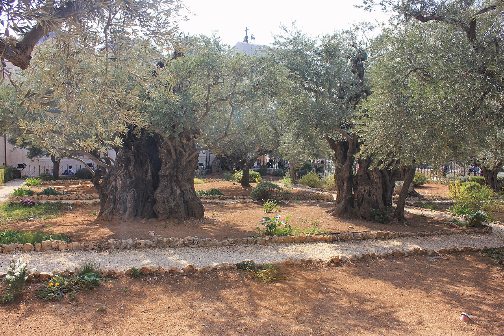
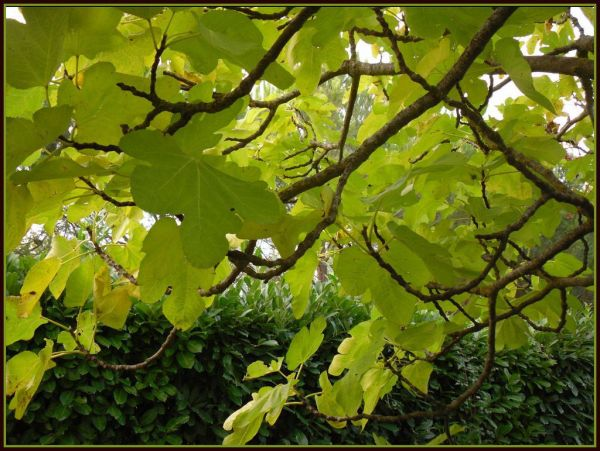
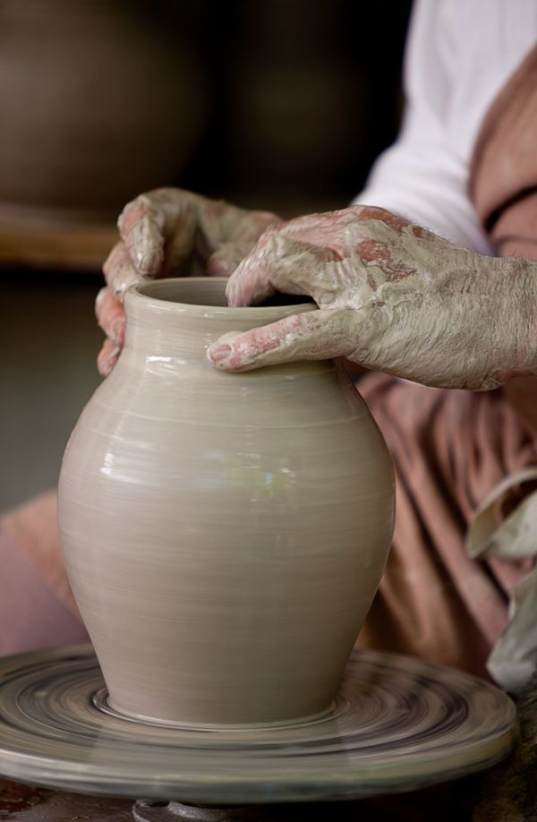
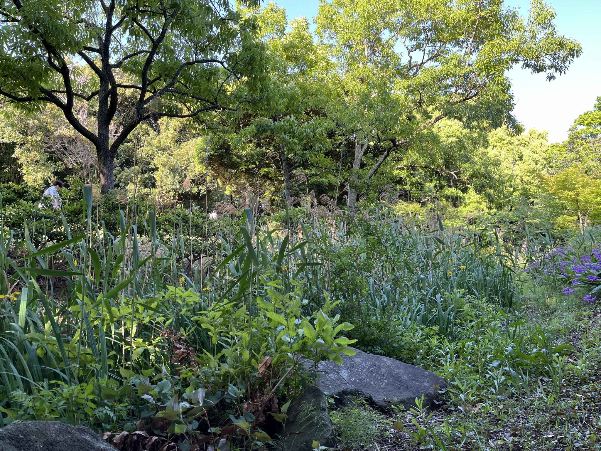
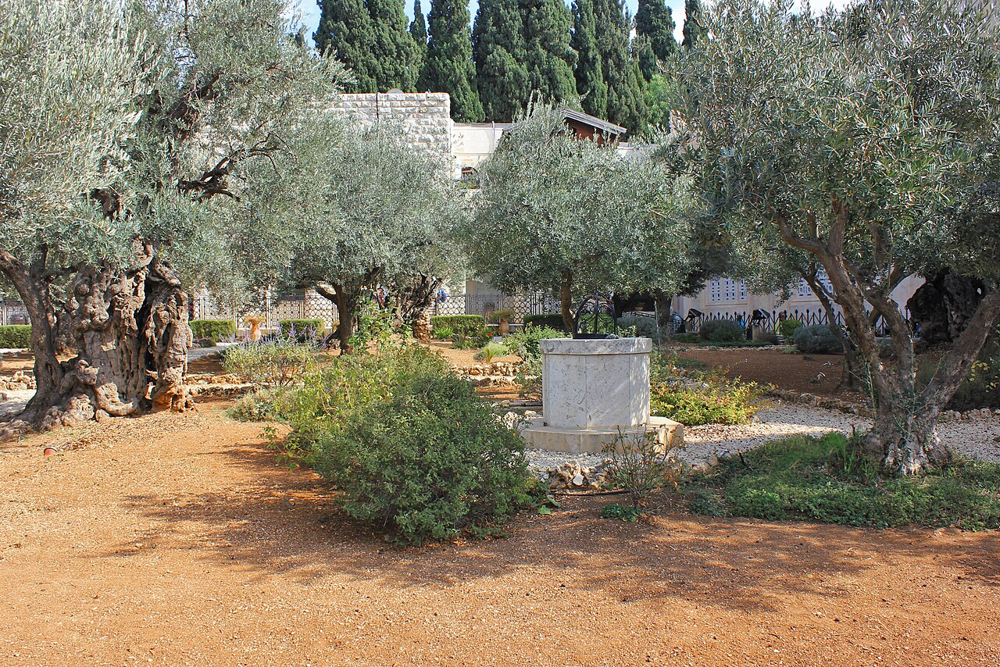

25 Verses Word by Word in the Garden of Eden: Genesis 2 Explained for You
Genesis 1 is a wide view. You see the whole week at once, like a man on a hill who sees the whole valley.
Genesis 1 is a wide view. You see the whole week at once, like a man on a hill who sees the whole valley. Genesis 2 walks down into the valley. The lens draws close. Now there is dust on God's hands, breath in a man's nose, water in a river with names, gold in a land far off, and one tree you may not eat from. Many readers ask: is this the same story told twice, or a second story that fights the first? Read slow, in the King James text, the answer is plain: chapter 2 takes up the sixth day and the man God made, and tells his start close up: his making, his home, his work, his one law, and his wife. This post walks all 25 verses in order, in plain words, with the Hebrew words where they open the text, and with plain notes where good readers differ.
Genesis 2 has 25 verses. It opens with God's rest on the seventh day, then goes back to the day man was made and tells it close: the LORD God forms man from the dust of the ground, breathes the breath of life into him, plants a garden eastward in Eden, sets the man in it to dress it and keep it, lets him eat freely of every tree but one, and, when no help fit for him is found among the beasts, makes woman from his side and joins them as one flesh, naked and not ashamed. One river waters the garden and splits into four named rivers. The chapter is the close view of Genesis 1: the wide week first, then the man, his garden, and his home life, step by step.

Why does the chapter start with rest?
Verses 1 to 3 close the week of Genesis 1. "Thus the heavens and the earth were finished, and all the host of them." Host means the full set, all that fills a place, the way we speak of the host of heaven for the stars. "And on the seventh day God ended his work which he had made; and he rested on the seventh day from all his work which he had made. And God blessed the seventh day, and sanctified it." Sanctified means set apart as holy, marked off for God.
Rest here does not mean God was tired. The text gives its own cause: He rested because the work was done and good. Think of a builder who lays down his tools at the end of a house, not because his arms gave out, but because there is no more house to build. He walks through the rooms. He is glad. That glad stop is the picture. God blesses this day, as He blessed fish, birds, and man. The seventh day is the only day in the week that gets a blessing and a holy mark, and it has no "evening and morning" line. Readers have long noted that gap. The text does not tell us why. We note it and move on.
From verse 4 the lens draws close. "These are the generations of the heavens and of the earth when they were created." Generations here means the story of what came from them, the account of their line. And a new name stands in the text: from here on, God is called the LORD God. LORD, in small caps in the King James text, stands for the Hebrew name YHWH, God's own name, the name He later gives to Moses. In chapter 1 He was Elohim, God the maker of all. In chapter 2 He is YHWH Elohim, the LORD God who forms man with His hands and talks with him. Same God. Closer view.

How was man made, according to verses 5 to 7?
Verse 5 sets the scene: no plant of the field was yet in the earth, no herb had grown, for the LORD God had not made it rain, and there was no man to till the ground. Till means to work soil for crops. Verse 6: "But there went up a mist from the earth, and watered the whole face of the ground." Water comes up from below before rain comes down from above. The text says what it says; it does not say more.
Verse 7 is the heart of the chapter: "And the LORD God formed man of the dust of the ground, and breathed into his nostrils the breath of life; and man became a living soul."
This is the hardest idea in the chapter, so we will say it two ways.
First way, with the Hebrew words. Formed is yatsar, the word for what a potter does with clay. A potter does not shout at clay from far off. He sits, he presses, he shapes with his thumbs. The LORD God is shown as a potter, close and hands-on. Dust is from the ground, and ground is adamah. Man is adam. Hear the word play: adam from adamah, man from the soil he will till and one day go back to. Breath of life is neshamat chayim, God's own breath in man's nose. Living soul is nephesh: a living being, a whole live self, not a ghost in a shell.
Second way, with a plain picture. Think of a clay cup and a man who fills it. The cup by itself holds nothing and does nothing. Fill it, and now it can be drunk from. Or think of a flute: shaped wood, silent on a shelf. Breath goes in, and there is music. Man is the shaped dust. God's breath is what makes the dust a living soul. Dust gives man his low place: he is earth, not heaven. Breath gives man his high place: his life is God's gift, held from God breath by breath. Both facts stay true at once, and the chapter will not let you drop either one. Where readers differ is on fine points of how to picture the act. On what the verse says, the words are plain: formed from dust, breathed into by God, became a living soul.

What is the garden like, and what are the two trees?
Verse 8: "And the LORD God planted a garden eastward in Eden; and there he put the man whom he had formed." Eden is the land. The garden is a fenced, planted place inside that land, to its east. God is the planter. Man does not find the garden wild and tame it. He is put into a home his Maker made for him.
Verse 9: "And out of the ground made the LORD God to grow every tree that is pleasant to the sight, and good for food; the tree of life also in the midst of the garden, and the tree of knowledge of good and evil." The trees are good to look at and good to eat from: beauty and food in one gift. Two trees are named. The tree of life stands in the midst, the middle of the garden. Its name says its fruit goes with life that does not end. The tree of knowledge of good and evil also stands there. The text does not say its fruit is foul or that the tree is a trap. It is one of the trees God grew. The law about it comes later, in verses 16 and 17. Note what the text does not say: it never names the fruit. It does not say apple. Any picture of an apple came later, from art, not from this page.

What does the river do, and where does it go?
Verses 10 to 14 slow down for water and land, and the detail is thick with names. "And a river went out of Eden to water the garden; and from thence it was parted, and became into four heads." One river flows out of Eden, waters the garden, then splits into four heads, four start points of four rivers.
The first is Pison, which winds through the whole land of Havilah, "where there is gold. And the gold of that land is good: there is bdellium and the onyx stone." Bdellium is a sweet gum from a tree, prized in the old world; onyx is a fine stone. The second river is Gihon, which winds through the whole land of Ethiopia; the Hebrew name for that land is Cush, south of Egypt. The third is Hiddekel, which flows toward the east of Assyria; Hiddekel is the old name of the river also called the Tigris. The fourth is the Euphrates, a name you still find on maps now.
Two of these rivers, the Tigris and the Euphrates, are known rivers of the east. The Pison and the Gihon are not fixed on our maps with the same sureness, and readers differ on where they ran. The text gives names, lands, and goods, and then stops. It reads like a man naming real places of his world, not like a fairy tale that hides its places. But we say plainly: the full map cannot be drawn from this page alone, and no honest reader should fake one.
Why does the chapter spend five verses on a river? See what the river does. Life flows out from God's garden to the lands round it. The garden is not a box shut off from the world. Its water runs out in four ways, to gold land, to Cush, to Assyria, to the Euphrates land. Blessing starts in one place and spreads. That flow, out from the garden to the world, is a shape the rest of the Bible takes up more than once.

What work and what law does the man get?
Verse 15: "And the LORD God took the man, and put him into the garden of Eden to dress it and to keep it." Two work words. Dress is avad: to work, to till, and the same word also means to serve. Keep is shamar: to guard, to watch over, the word used for a shepherd who keeps sheep and for guards who keep a gate. So man's first job is both farm work and guard duty: serve the garden, and watch over it. Work is not a curse in this chapter. Work comes before any sin, as a gift and a trust. The curse on work, sweat and thorns, comes in chapter 3, and it twists work; it does not start it.
Verses 16 and 17 give the one law: "And the LORD God commanded the man, saying, Of every tree of the garden thou mayest freely eat: But of the tree of the knowledge of good and evil, thou shalt not eat of it: for in the day that thou eatest thereof thou shalt surely die." Read the shape of the law. The gift is wide first: every tree, freely. Freely means with a free hand, as much as you want. The bar is narrow: one tree. The cost is named in strong words: thou shalt surely die. In Hebrew the words double up: dying, you shall die. Teachers read that doubling as stress: death is sure, and it starts the day you eat. What kind of death, and how it grows, is told as the Bible goes on. Here the point is trust: man lives by God's word in a garden of gifts, and one closed gate tests whether he will take God's word for what is good, or seize the choice of good and evil for himself.
Why is the woman made, and how?
Verse 18: "And the LORD God said, It is not good that the man should be alone; I will make him an help meet for him." This is the first "not good" in the Bible, and it comes from God's own mouth, in a world He called very good. The lack is not sin. It is a gap God names and means to fill. Help meet is two words in the King James text. Meet means fit, right for. Help is the Hebrew ezer. Ezer is a strong word: in the rest of the Hebrew Bible it is used most often of God Himself as the help of His people, and of strong aid in time of need. It is not a word for a weak aide. Meet is kenegdo: as over against him, face to face with him, a match who stands across from him as his like. Put it in plain words: a strong help who is his match, face to face.
Verses 19 and 20: God forms the beasts and birds and brings them to Adam "to see what he would call them: and whatsoever Adam called every living creature, that was the name thereof." Adam names the cattle, the birds, the beasts of the field. Naming is real work of the mind, and it is also a search: among all of them, "there was not found an help meet for him." No beast is his match, face to face. The search makes the lack felt, so the gift, when it comes, is known for what it is.
Verses 21 and 22: "And the LORD God caused a deep sleep to fall upon Adam, and he slept: and he took one of his ribs, and closed up the flesh instead thereof; And the rib, which the LORD God had taken from man, made he a woman, and brought her unto the man." Deep sleep is tardemah, a heavy sleep God sends; Adam does no work here at all. The gift is pure gift. Rib is the King James word for the Hebrew tsela, which in most of its uses means side: the side of a hill, the side of the ark of the covenant, side rooms of the temple. Many teachers thus say side is the more exact word: God took from Adam's side, not a small bone only, but of his side, and from it built the woman. Made is here a build word: God built the rib into a woman, the way a builder raises a house. Then God brings her to the man, like a father who brings a bride.
Verse 23 is man's first speech in the Bible, and it is a glad cry: "This is now bone of my bones, and flesh of my flesh: she shall be called Woman, because she was taken out of Man." Woman is ishah, Man is ish. The words chime, like adam and adamah did. Verse 24 draws the rule out of the gift: "Therefore shall a man leave his father and his mother, and shall cleave unto his wife: and they shall be one flesh." Cleave means to cling, to stick fast. One flesh means one new whole life, not two lives side by side only. Verse 25 ends the chapter in peace: "And they were both naked, the man and his wife, and were not ashamed." Nothing to hide, nothing to fear, no shame yet in the world. The chapter that began with God's rest ends with man's rest: at home, at work he loves, under one kind law, with his match at his side.
Checklist:
- Read Genesis 2 out loud once, all 25 verses, and mark where the name in the text shifts to the LORD God
- List the four rivers in order: Pison, Gihon, Hiddekel, Euphrates, with the land each one is tied to
- Say verse 7 in your own plain words: what man is made of, what God breathes in, what man becomes
- Write the two work words of verse 15, dress and keep, and one line on what each one asks of Adam
- Read verses 16 and 17 again and note the shape: how wide the gift is, how narrow the one bar is

Your free tool for this step
Use the Journey Tracker on The Right Way site. You can find it here: https://therightway.life/tools/journey-tracker.html
The Journey Tracker is a free tool that keeps your place on the journey through the Bible, chapter by chapter, in order. This post is the companion for Genesis 2, the second step of the journey, right after Genesis 1. Here is how to use it for this step. Open the tracker and mark Genesis 2 as read. Write one short note next to it: the name or word you want to hold on to. Many readers write one of the river names, or the words help meet, because chapter 2 is full of names that reward a second look. The tracker keeps your note with your place, so when the journey comes back to Eden later in the Bible, your own first notes are still there.
The tracker does not read the chapter for you, and it does not test you on the names. It does one plain job: it holds your place and your notes in order, chapter after chapter. Everything on this site is free. This work is kept free for every reader, and some readers give toward the labor of making it. That is the only way it is kept going.

The bottom line
Genesis 2 is 25 verses and one close view. God rests on the seventh day and makes it holy. Then the camera comes down to the man: formed of dust, filled with God's breath, set in a planted garden eastward in Eden, watered by one river that splits into four. His work is to dress and keep. His law is one tree closed in a garden thrown open. His lack is named by God, felt in the naming of the beasts, and filled by a gift he slept through: woman, built from his side, bone of his bones, joined to him as one flesh, with no shame in the world yet. Mark it read, keep your note, and go on to Genesis 3, where the one law is put to the test.